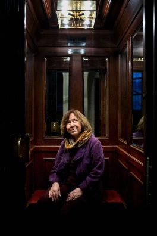

پذيرش > تریبون > مقالات > جنگ هیچ صورت زنانه ای ندارد / ترجمه و تلخیص: شیرین اردلان


 جنگ هیچ صورت زنانه ای ندارد / ترجمه و تلخیص: شیرین اردلان جنگ هیچ صورت زنانه ای ندارد / ترجمه و تلخیص: شیرین اردلان
25 آذر 1391 - اعتقاد به اتوپیا زنان را به جنگ کشاند - نسخه قابل چاپ
تغییر برای برابری: سوتلانا آلکسیوویچ، نویسنده بلاروس، طی سی وپنج سال، تاریخ خونین اتحاد جماهیر شوروی را در کتابی با عنوان جنگ هیچ صورت زنانه ای ندارد روایت کرده است.
کتاب حاصل مصاحبه او با حدود یک هزارزن مبارز قبل وبعد از پروستاریکا است، سربازان فراموش شده ای که درارتش سرخ جنگیدند.
مهارت و کار فوق العاده او در مصاحبه ها، سوال های بجا و انتخاب های درست و دقیق، این کتاب را به شاهکاری کم نظیرتبدیل کرده است.
سوتلانا متولد 1948 است، او بعد از سالها زندگی در فرانسه و ایتالیا، سال گذشته به مینسک بازگشت. حاصل یک عمر زندگی سوتلانا، تا کنون چهار کتاب بوده که پنجمین آن هم دردست چاپ است. او این سری کتاب ها را که تا کنون به نوزده زبان ترجمه شده است، «بیوگرافی اتوپیا» نام نهاده است. در سوئد او را با کتاب دعا برای چرنوبیل به سال 1985 می شناسند.
سوتلانا درتازه ترین نسخه کامل و بدون سانسور کتابش "جنگ هیچ صورت زنانه ای ندارد" خاطرات زنانی را بازگو می کند که در ارتش سرخ جنگیدند. کتاب بازگوی خاطرات و شهادت حدود هزار زن در دوران جنگ است. اثری که به گفته سوتلانا، به رمان صداها تبدیل شده است؛ کاری تاثیرگذار که روایت های کوتاه زنان درباره جنگ را به هم مرتبط کرده است. در این اثر، جنگ سرگذشت تک تک انسان هایی است که سرنوشت مشترک دارند.
سوتلانا آلکسیوویچ درسفر اخیرش به سوئد، در دفتر انتشارات ارستز در استکهلم با استفان اینگورسون گفتگویی داشت که گوشه هایی از آن را می خوانید:
 من در یکی از روستاهای بلاروس بزرگ شدم و زندگی کردم. پس از جنگ، بیشتر ساکنان روستاها را زنان تشکیل می دادند، تقریبا نیمی از مردان کشته شده بودند. خاطراتی که از کودکی دارم داستان هایی است که زنان درباره جنگ تعریف کرده اند. من در یکی از روستاهای بلاروس بزرگ شدم و زندگی کردم. پس از جنگ، بیشتر ساکنان روستاها را زنان تشکیل می دادند، تقریبا نیمی از مردان کشته شده بودند. خاطراتی که از کودکی دارم داستان هایی است که زنان درباره جنگ تعریف کرده اند.
بعدها که شروع به خواندن روزنامه ها و کتاب های درسی کردم، متوجه شدم که داستان های زنان که در خاطرت کودکی ام نقش بسته بود با نوشته روزنامه ها وکتاب هایی که می خواندم یکی نیست. آن زمان فهمیدم که جنگ زنان ومردان با هم خیلی تفاوت دارد.همه چیز متفاوت بود.
چه چیز در جنگ متفاوت بود؟
ازبین تمام توصیفاتی که شنیده بودم چیزی که نمی توانستم با آن کنار بیایم کشتار در جنگ بود. در روزنامه ها کتاب های درسی خیلی معمولی در باره کشتارهای جنگی حرف می زدند. و این که کشتن یک انسان چه عاقبتی دارد هرگز زیر سوال نمی رفت.
زمانی که خبرنگاری جوان بودم مصاحبه با زنان را شروع کردم. آنها نه تنها درد ورنج انسانی را شرح می دادند حتی از پرندگان وحیواناتی که دسته دسته کشته می شدند و به زمین می افتادند، سخن می گفتند و همین طور از طبیعتی که ویران می شد.
مردها بیشتراز پیروزی در جنگ حرف می زدند.اما من به دانستن این که کدام پرچم بالای سر انسان ها به اهتزاز در می آید یا اینکه انسان ها به نام کدام پرچم می میرند، علاقه ای ندارم.
تعداد زنانی که درشوروی سابق در جنگ جهانی دوم شرکت داشتند چقدر بود؟
به طوررسمی یک میلیون زن، ولی زنانی که به صورت زیرزمینی در جنبش پارتیزانی بودند در اینجا به حساب نیامده اند. ما نمی دانیم آنها چند نفر بودند، اما تخمین زده اند که یک درصد زنان شوروی بوده اند.
تقریبا همه آنها داوطلبانه به جبهه رفته بودند. شما این درخواست مشتاقانه را چگونه توضیح می دهید؟
آنها وطن شان را بالاتر از همه چیز می دانستند و می خواستند از آن دفاع کنند. جامعه شوروی انسان مخصوصی بوجود آورد که برای زندگی خودش ارزشی قائل نبود.
ایمان واعتقاد به اتوپیا (مدینه فاضله ) انگیزه دختران شانزده تا بیست ساله بود که به سربازی بروند.
جنگ قبلا یک کار مردانه بود. این چیزی بود که سیستم شوروی آن را تغییر داده بود؟
بله از یک زاویه این تبلیغات در رابطه با برابری بود. زنان انتطارداشتند که هواپیما را به پرواز درآورند یا راننده تراکتورباشند با همان حقوقی که مردان می گرفتند. ولی آن دختران هنوز به سنی نرسیده بودند که وارد بازار کار شوند، خیلی جوان بودند وجو موجود در جامعه آنها را فراگرفته بود.
زمانی که زنان از جنگ برگشتند جامعه خود را بیش از گذشته کنسرواتیو و متعصب یافتند. با این دید به آنها برخورد می شد که در جبهه با مردان خوابیده اند. تعصبات جامعه آنها را بلعید. روحشان آزرده شد، در مقابل مردانی که آنها را به چشم قهرمان نگاه نمی کردند تلخ تر و آسیب دیده تر شده بودند.اما هیچکدام آنان از رفتن به جنگ پشیمان نبودند.

صحبت چه چیزی از همه سخت تر بود ؟
برای آنها پذیرش آنچه در روزنامه ها وکتاب ها درباره جنگ می نوشتند سخت بود اما حتی زمانی که با لغت های خودشان با من از تجاربشان می گفتند گاه پشیمان می شدند و می گفتند نه همان را که در روزنامه ها نوشته اند بنویس.
سه موضوع بود که در باره آن حرف نمی زدند: عشق، آزار واذیت سربازان آلمانی توسط ارتش سرخ و بدگویی در باره استالین. این سه موضوع بعد از پروستاریکا به کتاب افزوده شد.
زنی را به یاد می آورم که تمام نشان ها و مدال هایش را به من نشان داد و وقت رفتن از من پرسید که آیا دوست دارم لباس عروسی اش را که با گاز و باند زخم درست کرده بود ببینم. برای من خیلی مهم بود ولی درکش برای او خیلی سخت بود که چرا دیدن لباس عروسی برای من جالب تر از دیدن مدال ها است.
بعدها چیزهایی که حتی نمی خواستند تا لحظه مرگ هم در باره اش حرف بزنند را برایم تعریف کردند. مثل تجاوزآلمانی ها در روستاهای اشغال شده به زنان، وهمچنین بچه های حاصل این تجاوزها. به نظرم این جامعه نیست که پوزه بند می گذارد، این خود انسان است که ساکت می ماند.
وقتی این بخش داستان ها قبل از پروستاریکا نوشته نشده بود، پس چه چیزی را سانسور می کردند؟
ما نمی توانستیم عکس وتصویر سرباز شوروی را که مثل یک قهرمان بود کنار بگذاریم. پیروزی در جنگ قشنگ وبا ارزش بود و هرچه که این باور محکم را تکان می داد خیلی حساس بود. تمام جنایتی که از طرف ارتش سرخ انجام شده بود و تمام خیانتی که علیه زنان صورت گرفته بود نادیده گرفته می شد.
چطور آدم می تواند با این وضعیت کنار بیاید وقتی درباره رقم وحشتناک زیاد یک میلیون کشته و گمشده حرف می زند؟
در طی سی وپنج سالی که درباره اتوپیای شوروی وآن زندگی ها می نویسم، تمام راه خونین است اما راهی برای ایده الیست کردن این خون ریزی وجود دارد. برای تعریف از بین رفتن میلیون ها زندگی و میلیون ها آدم، مجبوری تعداد تعریف زندگی ها را کم کنی تا موضوع قابل درک شود.
در تو چه چیزی هست که کمک می کند تا انسان انسانیت خود را از دست ندهد وقتی که با این فاجعه روبرو می شود؟
درزمان مصاحبه با یک جلاد سازمان امنیت شوروی حرف زدم که می گفت سه روز بیشتر لازم نداشت تا یک انسان را به یک حیوان تبدیل کند. وقتی پایه صندلی را در ما تحت کسی کرده باشد که دیگر چیزی از آن انسان باقی نمی ماند.
از یک شکنجه گر دیگر شنیدم که مداد را درنوک سینه زنان فرو می کرد. چه کسی می تواند این ها را تحمل کند؟
در اردوگاه های کار شوروی می گفتند که سه روز بیشتر لازم نبود تا یک انسان از انسانیت خارج شود. سه روز مثل حیوان زندگی کردن آدم را به حیوان تبدیل می کند.
من نمی خواهم این کتاب تجارب روسیه باشد. این کتاب درباره انسان ها است. خیلی راحت است که ما اینجا بنشینیم و حرف بزنیم، قهوه بخوریم و درباره فرهنگ و ادبیات صحبت کنیم ولی چه می کردیم اگر بعد از ده روز گرسنگی به ما یک عدد نان می دادند؟ قصد من این نیست که خواننده ام را ناامید کنم، می خواهم که قوی شویم وببینیم با همه این سختی ها چه کارهایی می توانیم انجام دهیم تا روحمان زنده بماند.
منبع : روزنامه سیدسونسکا
ارسال به
بالاترین
،
توییتر
،
فریندفید
،
فیسبوک
در همين بخش :
 دهمین دورۀ مراسم تندیس صدیقه دولت آبادی ۱۳۹۲ دهمین دورۀ مراسم تندیس صدیقه دولت آبادی ۱۳۹۲
کارت پستالهایی به بهانهی هشت مارس و به یاد همهی مبارزین راه برابری
بیانیه بیش از 350 تن از مدافعان حقوق زنان به مناسبت روز جهانی زن؛ زنان هر روز فرودستتر میشوند
لباسی که برای تن ما دوخته اند! /اعظم بهرامی
چالشها و چشمانداز فعالیت مدنی زنان
ديگر بخش ها :
طرح یک میلیون امضا
|
مقالات
|
سایت نوشته ها
|
اخبار
|
گزارش كمپين
|
گفت و گو
|
علیه سکوت
|
كوچه به كوچه
|
نامه های شما
|
گزارش ویژه
|
گفتگو با اعضا
|
ویژه سالگرد کمپین
|
تصویر برابری
|
دل آرام علی
|
تریبون
|
مقالات
|
تاریخ شفاهی
|
خارج از چارچوب
|
کتابخانه
|
درباره کمپین
|
کمپین در شهرها
|
کمپین در بند
|
صدای تغییر
|
ویژه 22 خرداد
|
لایحه حمایت از خانواده
|
گالری
|
عشا مومنی
|
امیر یعقوبعلی
|
خدیجه مقدم
|
راحله عسگری زاده و نسیم خسروی
|
پروین اردلان،جلوه جواهری، مریم حسین خواه، ناهید کشاورز
|
زینب پیغمبرزاده
|
سعیده امین، سارا ایمانیان، محبوبه حسین زاده، ناهید کشاورز و همایون نامی
|
احترام شادفر
|
نسیم سرابندی زاده،فاطمه دهدشتی
|
وبلاگ مهمان
|
پرونده خرم آباد
|
دستگیری ها
|
مریم مالک
|
پرستو اللهیاری
|
مهرنوش اعتمادی
|
سمیه رشیدی
|
Other Languages
|
همراهان
|
«فراخوان کمپین ده روز با بهاره هدایت»
| English
|